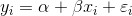
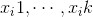
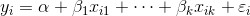

15.1 模型
回想一下，我们在第 14 章中所拟合的模型形式如下所示：

现在，如果每个输入 xi 不再是单个数字，而是一个由 k 个数字  组成的向量，那么我们的多重回归模型则应该为：

对于多重回归分析来说，参数向量通常称为 β 。我们希望这个向量也包括一个常数项，为此，只要向我们的数据中添加一列即可：
beta = [alpha, beta_1, ..., beta_k]
同时：
x_i = [1, x_i1, ..., x_ik]
那么，我们的模型可以用下列函数实现：
def predict(x_i, beta):
"""assumes that the first element of each x_i is 1"""
return dot(x_i, beta)
就本例而言，自变量 x 是一个向量型列表，每个列表元素如下所示：
[1, # 常数项
49, # 朋友数
4, # 每日工作时长
0] # 没有博士学位